The first lesson of Fab Acadamy 2015 was a presentation of course, the concept of Fab Lab and digital fabrication a first introduction of tools to build the web site that will contain my background, all my experience in Fab Academy and especially my final project.
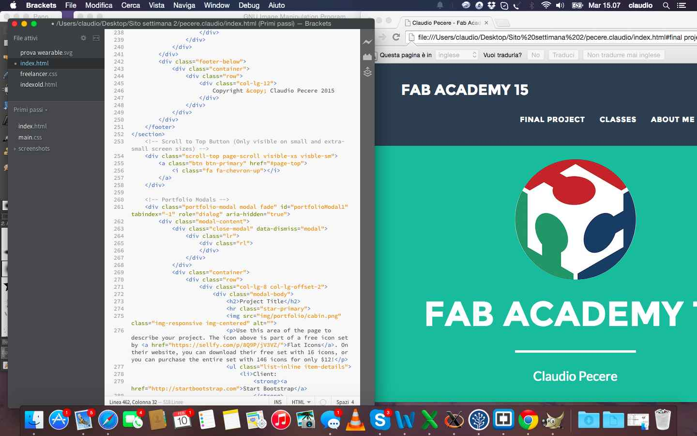I had never developed anything before Fab Academy and I had never even built a website. I built my site using a template bootstrap and then I developed it in html, with the use of CSS, through brackets. To better understand html and CSS I immediately looked for a nice template to open with brackets to modify it and check their effects. I quickly chose this template and from there I started to change the parts that interested me in terms of graphics and building the various pages to better document my Fab Academy
The other topic of the week but fundamental for the entire route of the Fab Academy has been the creation and management of the repository project. At OpenDot we used GitHub as a matter of easy and immediacy of use. We decided to manage all the commands from bash, then we synchronized the repository created by our tutor, entered the credentials from the terminal and did pull of ours Fab Academy folders. 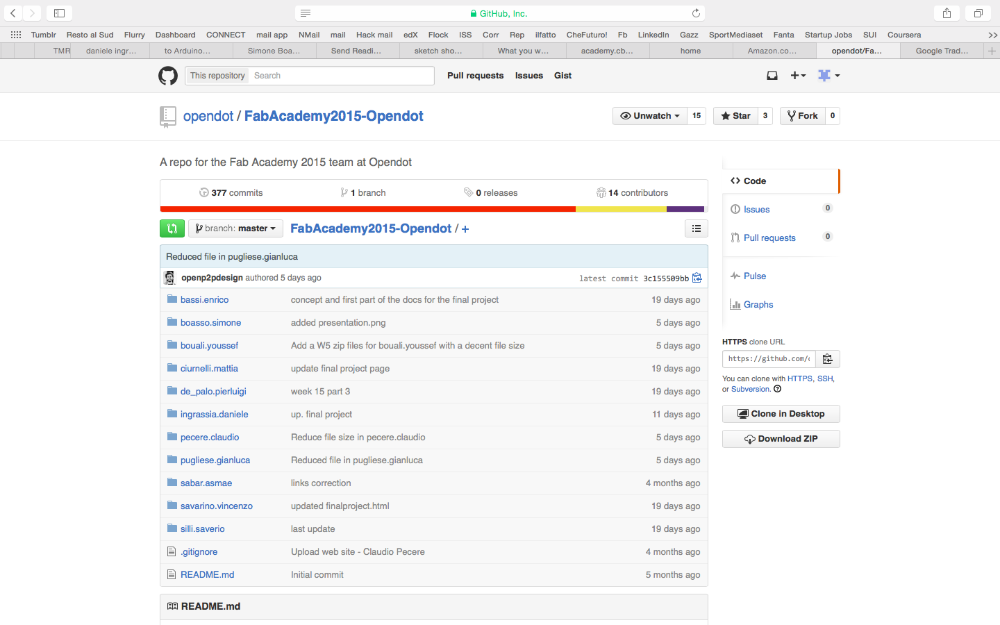 
The commands you use most often are:
The last step of the first week was to define a concept of the final project. I thought of two projects:


At the end I chose to develop my final project together with my colleague Youssef Bouali in order to produce a network of smart pots to monitor the health of plants  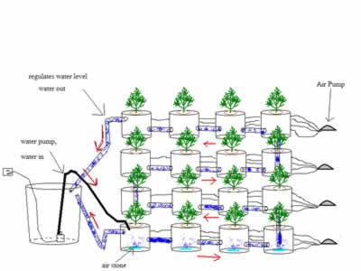
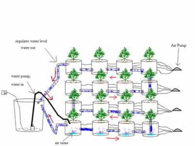
During second week , the task was to start from the sketch drawn to design the draft final project and achieve its design in 3d. Again, given my backgroud, I had to use sofware and concepts that I had never used before. The goal was to try, make mistakes and learn from more software as possible, both in 2D and in 3D. First I had to choose what to draw, as the project is not yet defined in detail. I decided to set up the project on a wearable device, so that people to track have with them a bracelet that I hope in the end could have a nice design. I've started to draw in 2D using Inksacape that at first glance I thought it was simple and effective for a beginner like me.


Beyond the difficulty in obtaining a good quality file svg of FabLab logo, I managed to get an acceptable design in 2D. The next step, and the most complex, was to model the svg files in 3D. I mainly used blender and to do that I had to follow of course many video tutorials and guides found on line. With blender I extruded the files in 2D and especially I rotated the parts in the direction I wanted. Then I defined color of materials and tried to change the individual faces of the object created.


In the last line I have also tried to realize the rendering of the image, but without animation and always using blender

During the design phase, I also used FreeCAD. But failing to install the software on the Mac I had to use it on another computer windows. FreeCAD seemed very intuitive compared to Blender but once you pass the initial impact it seemed more complete.
The last program I tried was Rhino. I re-extruded and fixed the svg file and then placed and rotated the logo. I fixed finally also the size of the bracelet and whole viewed as a solid object.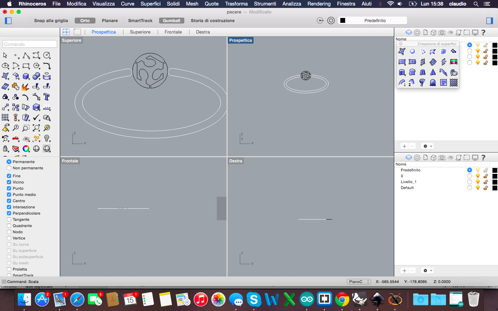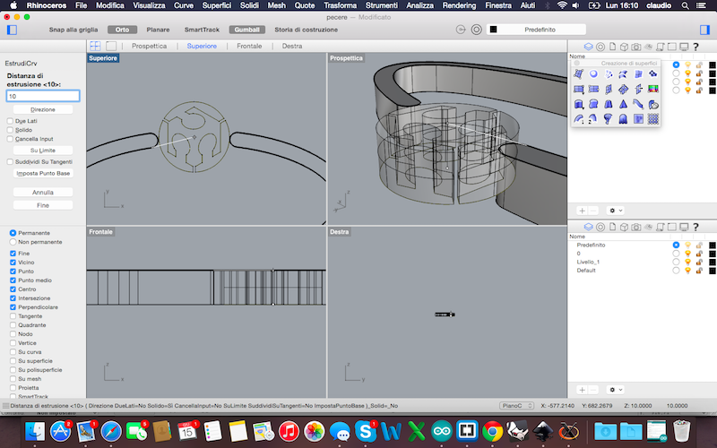
The lesson learned is that blender is a very interesting software, as completely open, developed in python and definitely good for the non-geometric figures. Rhino, however, after an initial block in understanding all commands it seemed the best for geometrical figures to be realized in a simple and very precise way and also to fix non-geometric figures such as drawn in blender and then optimized in Rhino
All the files are available for downloand here:
The week dedicated to learning cuttings tools was mainly focused on laser cutting and vinyl cutting. The objective was to provide an exercise by designing and cutting an object whose parts were modular and then assembled to achieve a structure in 3D. So designing in 2D to cut an object in 3D!
I started the week looking at some completed projects with cutting machines, mainly with laser cutting, to get inspired about my exercise. I focused my research on Thingiverse and Instructables and then some images on the web. At the end I decided to make a stand for my iPad.

As for the previous week, to design in 2D I used Inkscape, following some tutorials to understand how to best set the edges and points to be embedded in a piece and another.
 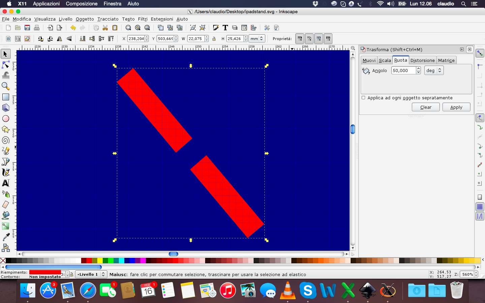
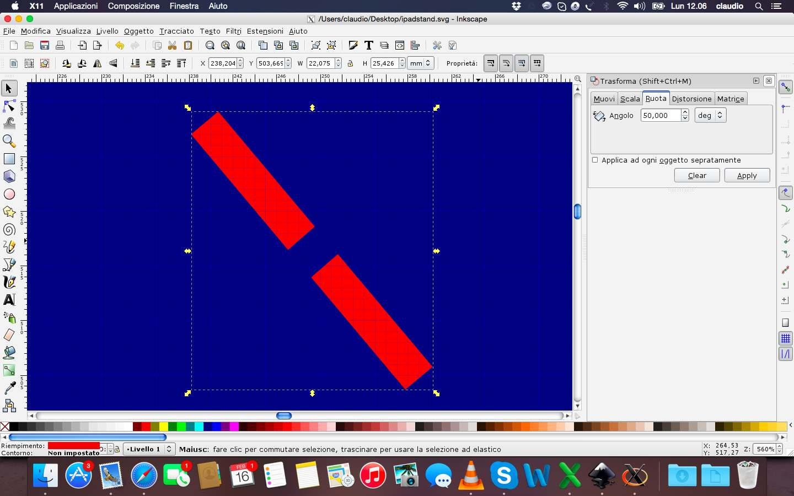
During the design had to also consider the instructions of the lab regarding the thickness of the sheets (3mm) of wood to be used and the kerf (0,12mm) of the laser cutting machine. All this has been necessary to design in a correct way the joints between the various parts.

Before proceeding to define the edges and save the file in pdf format and then proceed to cut, I entered the FabLab logo and text to engrave on the surface where it will be based the iPad
 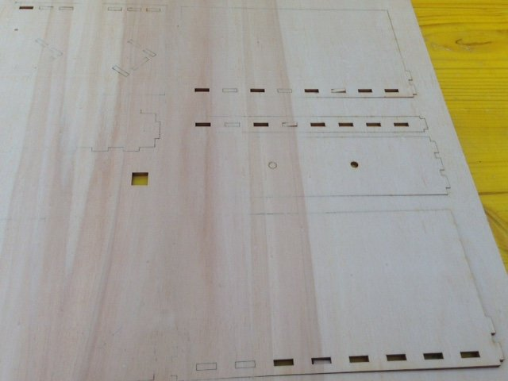
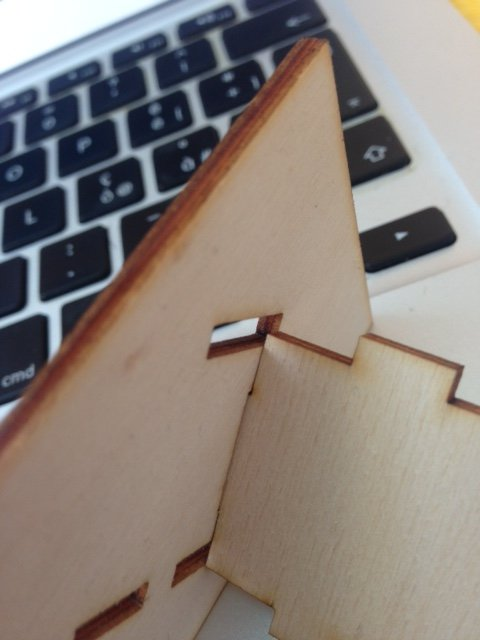
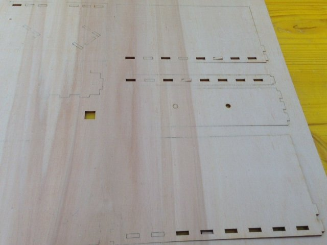
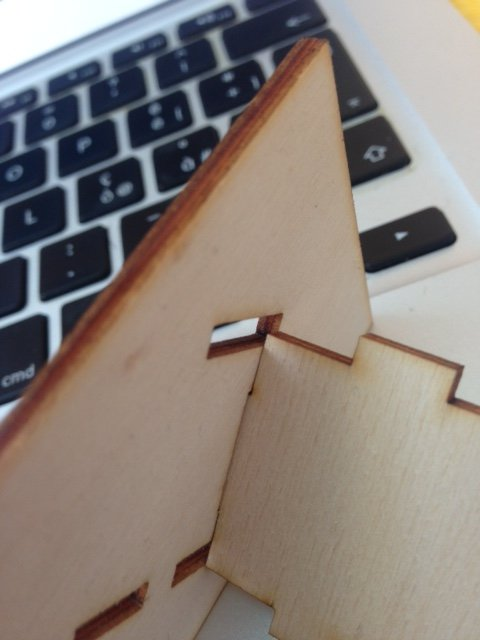
After designing the stand, I continued with the cut. I saved the file in inkscape in dxf format and then i open it on Rhino (4 format) to start cutting. I had some problem with the speed of cutting, maybe because the wood sheet was deformed. So i had external lines cutted in some area and and not in other areas. To resove this problem i fixed a lower speed of cutting. An other problem was about the angle of a piece that overlaps the hole of another piece: a design problem. I learned that inkscape is a good software for design this kind of project but especially in case of design some angular holes it's better to use Rhino!

Once i resolved design problems i cutted again my project and after i assembled it. This is the result:
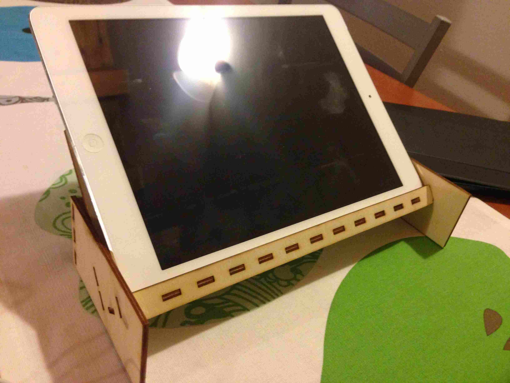

During the exercise with the Vinyl Cutter I decided to make a sticker with the logo of my app Pipeline. So I started from the vector logo made previously and I opened in Inkscape to fill the logo design and save it in SVG and DXF 

Then I opened the project with Rhino to verify the accuracy of the drawing and in fact I had to fix it again before cutting 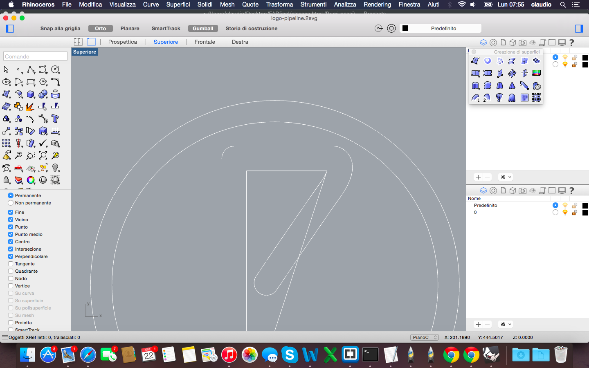
Before the cut I had to save the file in EPS format to allow the machine to read through software SignBlazer. Unfortunately and strangely the file was not complete, so I had to first open it and save it with CoreDraw in CMX format  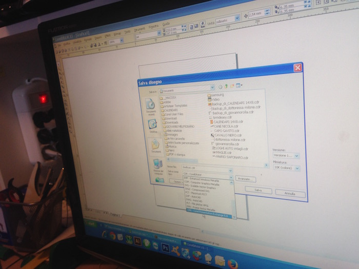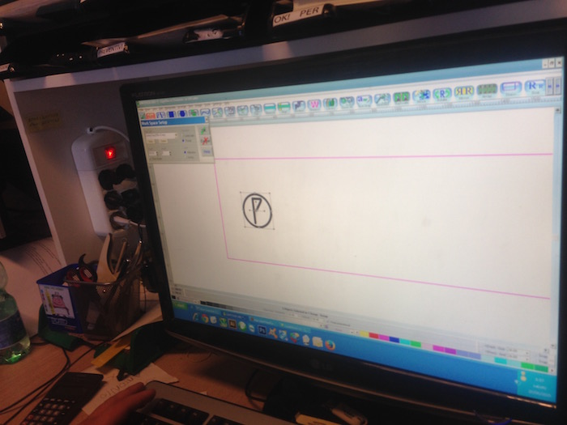
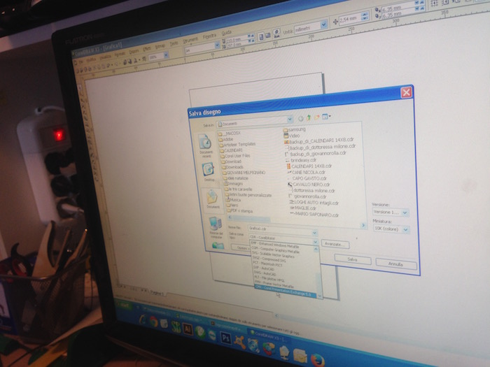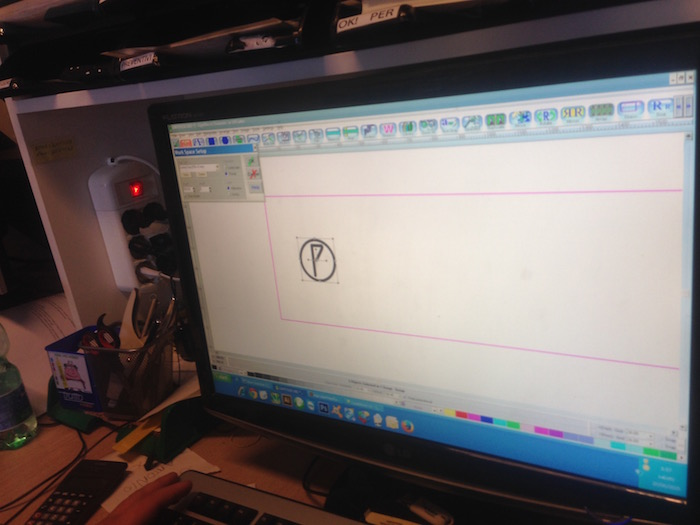
The phase of the cut went according to plan: I set speed and pressure of the blade and booted the machine 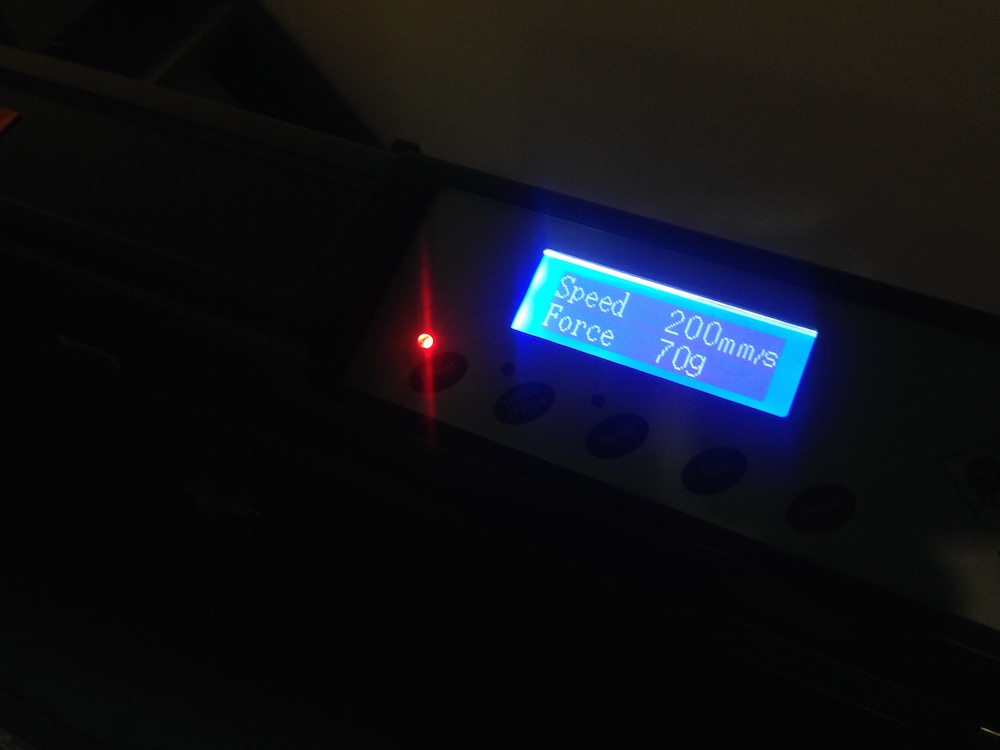
Vinyl Cutter from Claudio Pecere on Vimeo.
The last step was to remove the excess with the help of a utility knife and apply transparent tape to paste in the future the final object on a surface. This is the final result 
All the files are available for download here:
During Week 4 the goal was to make a FabISP in-circuit program. To do this it was necessary to choose one of two FABISP proposed during the weekly class, milling the board and the circuit, soldering the components and program the final ISP.
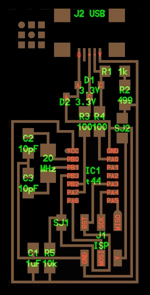
For my weekly assingment I choose the ISP with the resonator, the left one of the pictures above. The process to mill the board could be done by two different method: Using the milling machine or with a Laser Cutter able to cut the copper and engrave the traces of the board. In my lab, at OpenDot, we tried the second way, as the milling machine doesn't work. We used a Trotec Speedy 400 flexx to engrave the board, this machine has both CO2 and fiber laser technologies: 60 watt CO2 laser, 30 watt fiber laser. Here you can find the description of the process and experiments done in the lab on machinery.

To make my FabISP i download first the board sugested during the lesson 4, the board with the resonetor component. After, I modify the file .png with Gimp to replace tha white border with a black one. Before start the cutting machine, I opened the board file with Inkscape to customize it with a vector part and to put a red line on the border for the cut level.The experiment done on the laser cutter
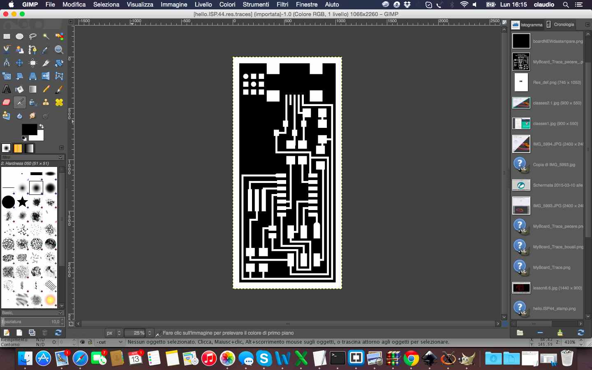
The experiments on the laser cutter defined settings to be set on Trotec for a fine engraving of the board, so after setting right levels, power and number of cut steps (fiber to engrave and CO2 to cut), the production process could begin. 
 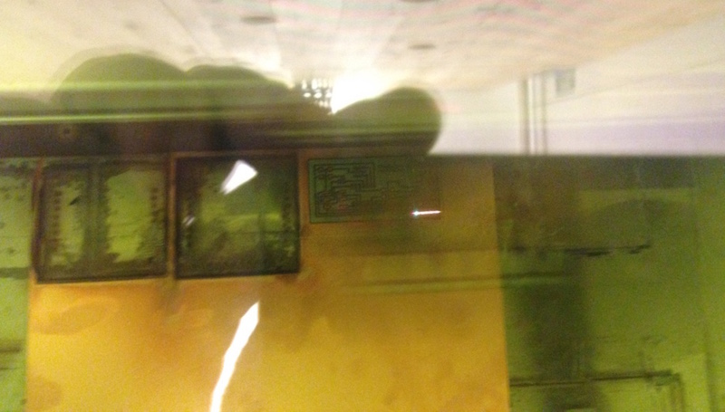
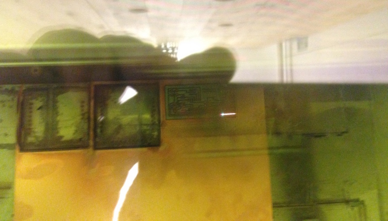
After approximately half an hour, this is the final results. To remove the residue of the operation of engraving and cutting, I just passed the board gently with water and a sponge for prepared it to the soldering process of the components (following the Fab Academy Tutorials).
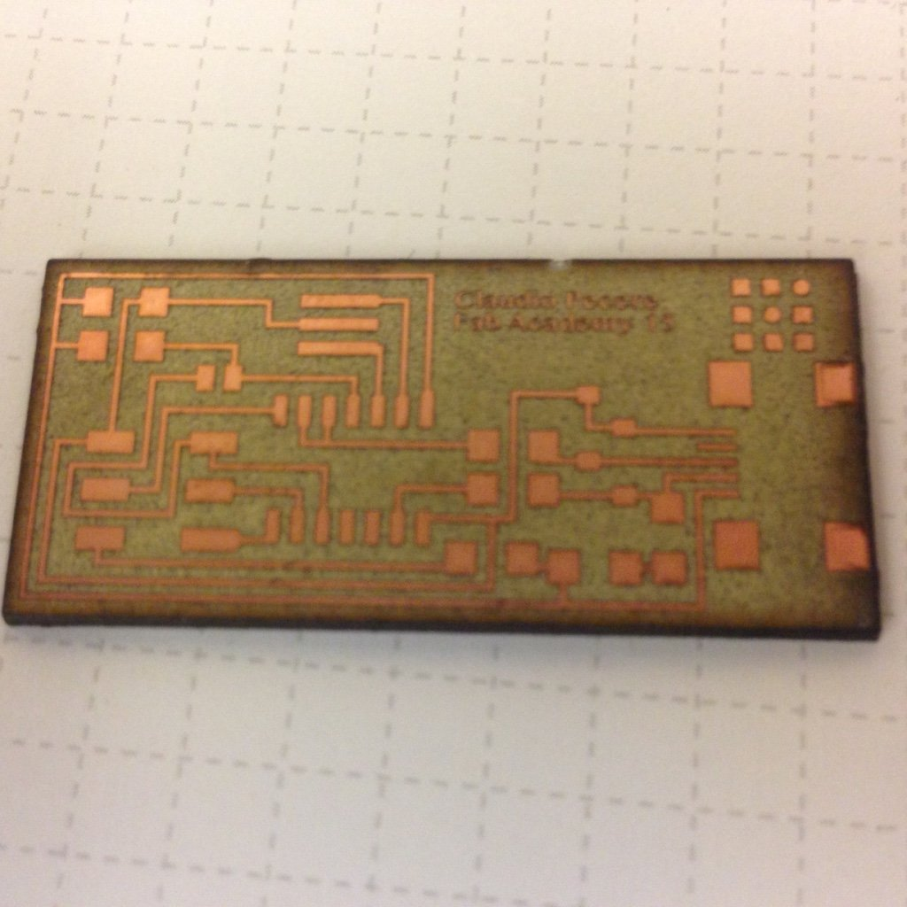
This is the layout of the FabISP 
And these are the components necessary for the board:
The welding process of the components was completely newly for me because I had never used a welder in my life. After check with a tester that all the traces of my board was correctly engraved, I tied to solder the first component on a bad board and the results were not very satisfactory but with some exercises I was able to soldering all the components on my ISP correctly


Once finished soldering I did the smoke test for a first check on the quality of the board: luckily everything was fine!

To programming the Fab ISP I needed:
Before starting programming i used the Arduino UNO as ISP, so when i load the scketch of ArduinoISP on Arduino IDE i had the right schema for connect Arduino 1 to FabISP

With my mate Youssef Bouali, we prepared all the links of the Arduino UNO and then I started to programming the FabISP following the Tutorial
 Once connected the ArduinoUNO and FabISP, I edited the Makefile of the firmware to ensure that it works with our ISP. It was needed to open it and modify the following lines about AVRDUDE as showed below.
Once connected the ArduinoUNO and FabISP, I edited the Makefile of the firmware to ensure that it works with our ISP. It was needed to open it and modify the following lines about AVRDUDE as showed below. To starting the programming process I had to navigate to the directory where I saved the FabISP firmware:
After command "Make clean"
Make hex
Make fuse
And finally "make program"
Everything seems to be prefect but the last check to see if everything was fine it was to verify that the Mac had recognized my FabISP
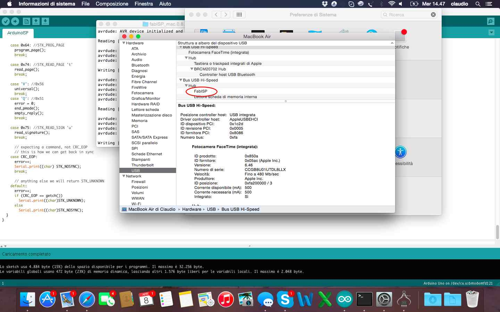The last step of this week was to remove the soldering brigde and the 0 ohm resistor: now my FabISP it's completed and ready to by used as programmer to program other boards!!!

The exercise of this week was to design and then print a small object in 3D and then scan and eventually print a real object. The first part of the exercise was achieved through Inkscape to draw the model in 2D. I wanted to create an object consisting of the 3D logo of Pipeline, a mobile App I developed in the last year. Is an object that maybe in the future I might change it into a keychain, maybe when my App becomes famous!


After finishing the design in 2D on Inkscape I tried to make the model in 3D with SketchUp. Personally i think that this software is certainly easier to use but for a complex and professional design I think it is needed best software. So I saved my file in .dxf on Inkscape and then work it on SketchUp. This is the result of design process
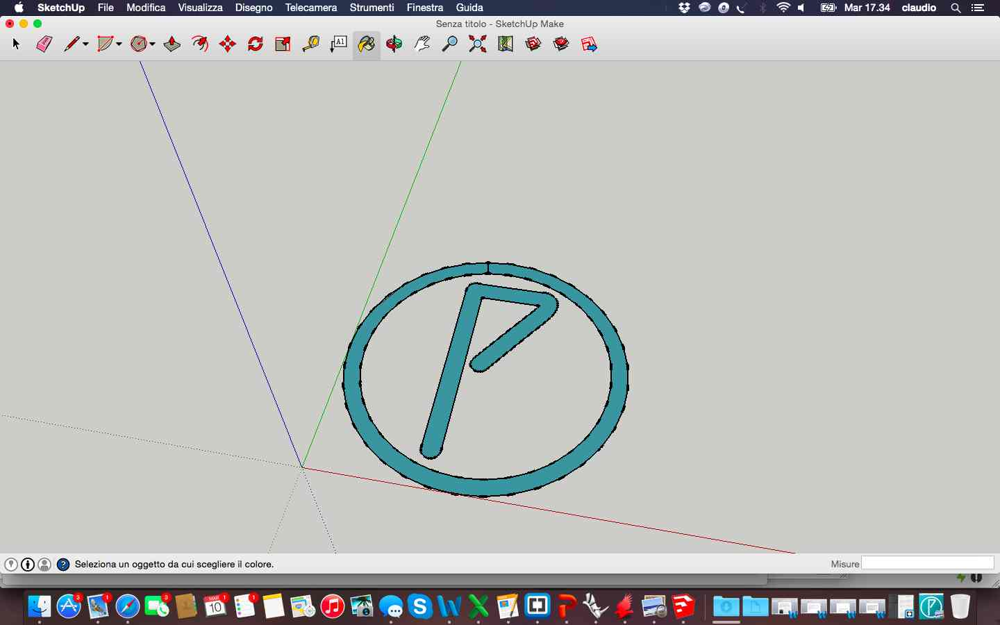

And this is the 3D printed final logo after loading .stl on Cura to generate the GCODE:


Regarding the exercise of scanning of a real object, I used the Kinect to capture the image of myself through the use of Skanect.


From Skanect I exported the file in .stl that presented some imperfections but overall a good definition. After I worked the file with blender to change the solid by removing unnecessary parts and excess, fix imperfections with the sculpture mode and modify individual points and add a base of support with my name.


Once I loaded the file to print in Cura I noticed that inside 3D object there were some holes and the letters of my name needed some supports to make a good print. So i modified the file in Rhino, better of Blender for deleting mesh and to doing a boulean difference to embedded my name into the base of the object
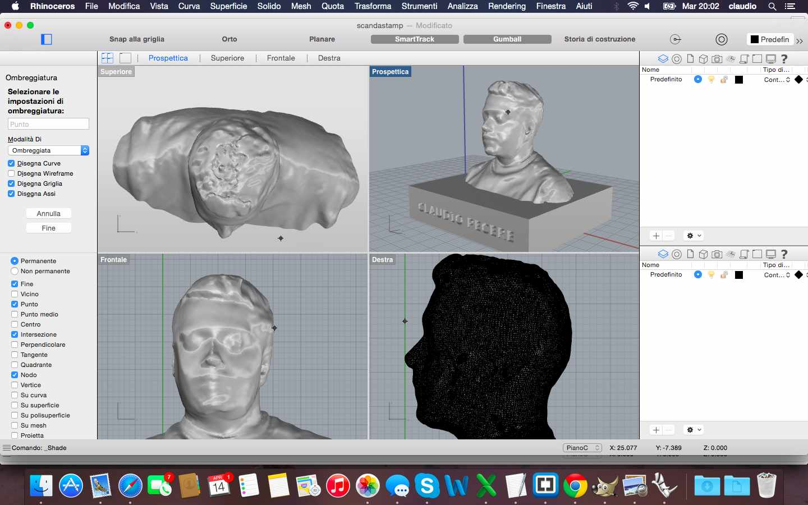Below the printer process and the final result of my self!


All the files are available for downloand here:
The exercise of this week was to redraw the echo hello-world board and add (at least) a button and LED (with current-limiting resistor) check the design rules, and make it. As for the previous weeks I had to start my preparation beginning from 0. So I bought a book of electronics for beginners to become familiar with the basic principles of this discipline. Once learned the basics to perform the exercise I have been closely following the tutorial published in Fab Academy. The first step was to download eagle and begin to understand its characteristics. Later I added the libraries of components required.
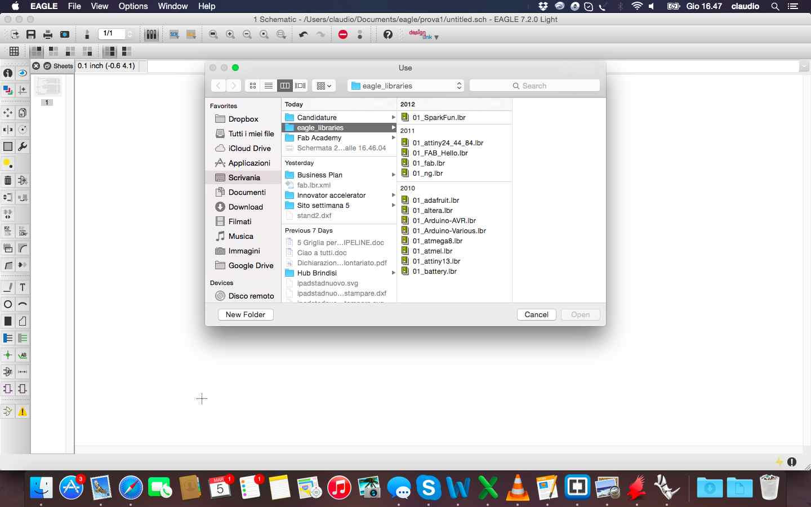 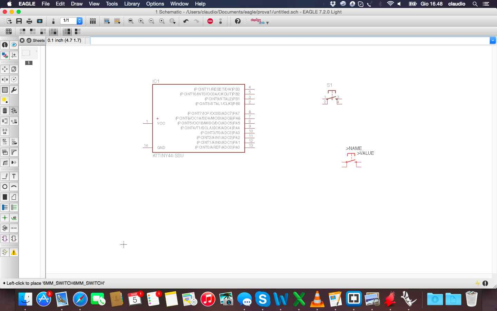
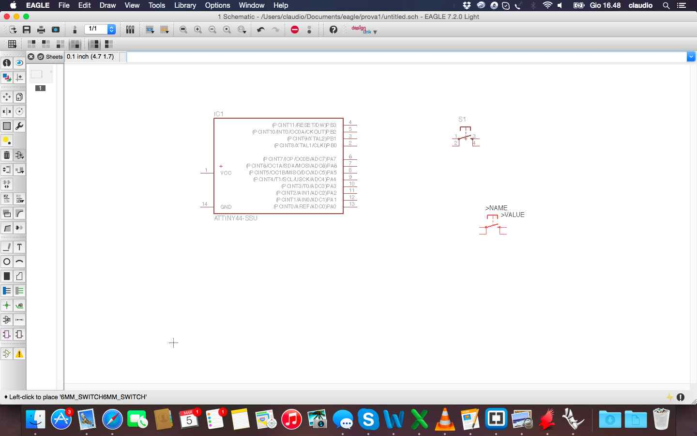 This is the final result with all component, led, button and links in the schematic view.

Once finished the schematic i worked on the board to draw trace to link all the components. I tried to choose the function "autorouter" but i prefered to draw manually all the trace and understand the feature of eagle in this phase.

Once I link all the traces I remove all layers except the top and i saved the file in .png and modified it in gimp with the parameters suggested in the previous tutorial.
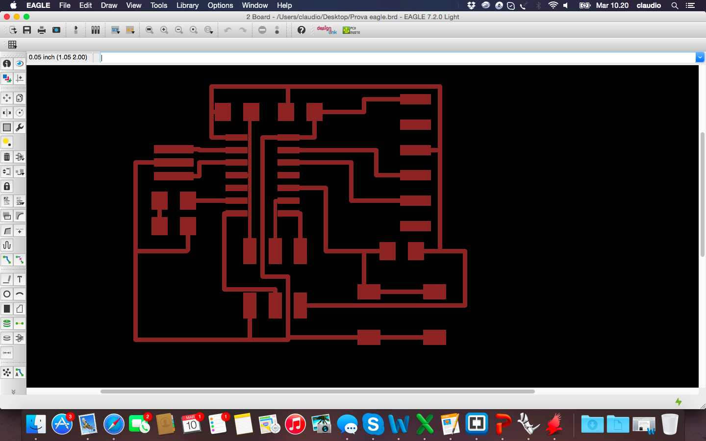 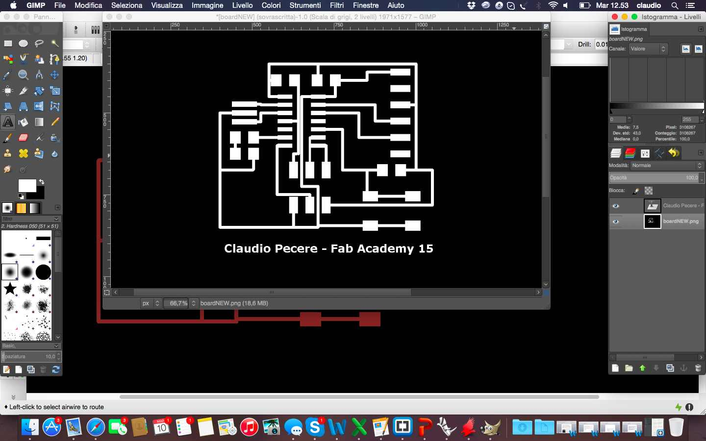The last step was to enter a text and fill with white traces black. So the last image even if it expresses almost nothing, is the image to be used to realize materially the board with a milling machine. 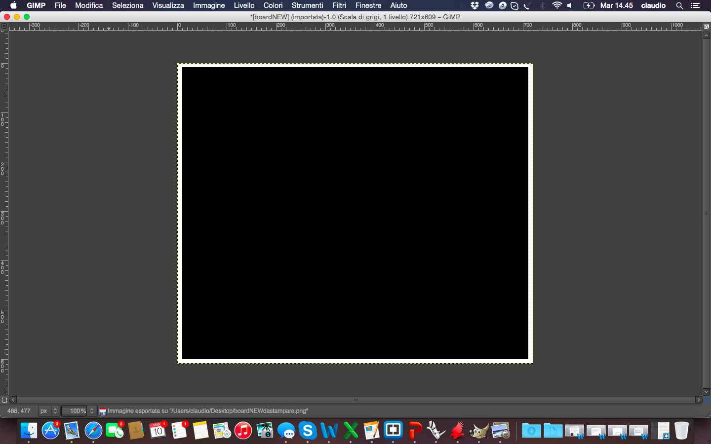 To make the hello board with Trotec Speedy 400 flexx to engrave the board, as I did for the FabISP assignment (week 4), i needed to mantain white the traces, black the background and to add in Inkscape the red level to cut the board. 
Setting and laser process of the board was the same of the FabISP 

And this is my first Hello Board, before and after soldering components!!!!
 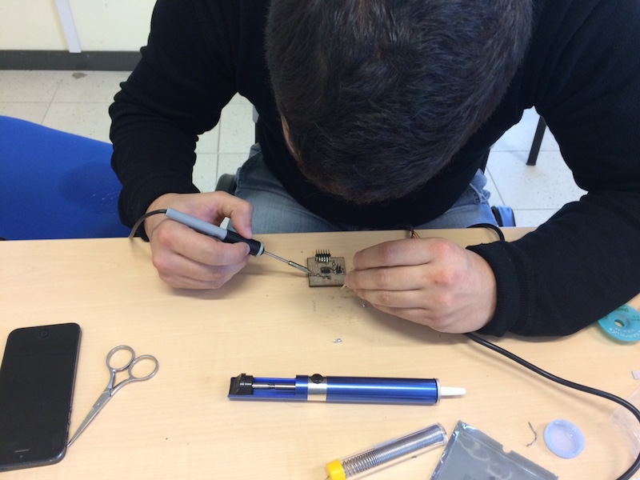
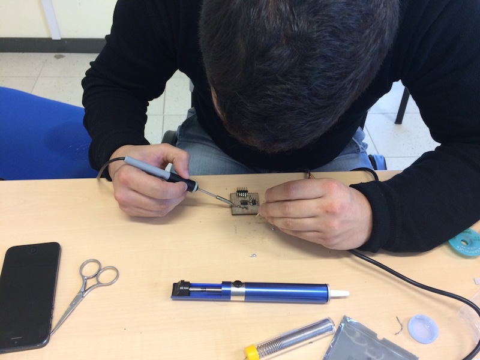
All the files are available for downloand here:
During this week the assignment was learn to program the electronic board that we have produced in the previous module.
The particular assignment of this was read the microcontroller data sheet, and to program the hello board to do something, with as many different programming languages and programming environments as possible. In previous module 6, we have designed the board to use the microcontroller Attiny44 and the related data sheet is the follow:
To understand and programming my hello board i followed the tutorial suggested on Fab Aacademy. To programming the board I needed to download a precompiled program written in C that is composed by a folder with two files: the Makefile, which is used to automate the programming, and the file steadyled.c which is the program.
The package I downloaded is composed of two files: the Makefile, which is used to automate the programming, and the file steadyled.c which is the program.
Before going further with programming the board, I had to modify the following two lines in order to specify to which pins the button and led are connected:
#define BUTTON_BIT PA3
#define LED_BIT PA7
So I connected the Hello board to the FabISP using the rainbow cable through the 6 Pins, and both boards to my computer through FDTI cable via USB ports:


Now I opened the terminal and changed command line to the directory of where my Makefile and C code are. So I executed the command "make" in order to create the execute file of the Makefile. The Makefile creates by default the hexadecimal file (steadyled.c.hex)
Now in the same folder I saved the stadyled file, I found the new files to programming the board. After that, I have launched the command "make program-usbtiny-fuses" to reset the microcontroller and prepare it to receive the programming:
The last step was launched the command "make program-usbtiny" in order to program the Hello board:
At this level, the LED should turn on by clicking on the button: this means that the board is working properly and it has been programmed successfully. Luckily my board works well!
The Makefile and C program are available for downloand here:
The exercise of this week was to build something big, drawing it and then producing it through the the CNC machine. The idea was to build something to give to my grandchildren, something that would be useful and would last (I would not bet on this;)). So I thought of a stool and having been inspired by some of the projects I started drawing in Rhino. The reference to the holes was obviously the thick sheet of wood which in my case was of 12mm
 Once finished drawing I set the levels of milling that, having no parts to be engraved, were only two: red for external cut and blue for internal cut
Once finished drawing I set the levels of milling that, having no parts to be engraved, were only two: red for external cut and blue for internal cut
 Last step of drawing was the check about the join parts. To control if all parts fit correctly with holes, I extruded all the pieces and then I lined up as a 3D model. Through this step I realized that the design was well done
Last step of drawing was the check about the join parts. To control if all parts fit correctly with holes, I extruded all the pieces and then I lined up as a 3D model. Through this step I realized that the design was well done


The next step was to load the .dxf on VCarv pro before sending it to cnc machine, in my case a Shopbot. The first step was to define the dimension of the wood sheet: 2100X1440mm and 12mm thickness of the wood and the size of the tools

 I have after set the levels of internal and external cut and viewed everything the preview set of VCarve
I have after set the levels of internal and external cut and viewed everything the preview set of VCarve

 The last step was to mill the pieces with Shopbot. Before starting the Shopbot, I set the Z axis and than I lauched the CNC
The last step was to mill the pieces with Shopbot. Before starting the Shopbot, I set the Z axis and than I lauched the CNC

Shopbot starts working from Claudio Pecere on Vimeo
Once the shopbots has finished its work, I removed the pieces from the sheet of wood with a chisel. I immediately noticed some imperfections within the holes, it looked as if the CNC had drawn tabs even within the parties to pierce completely. I removed also this parts 
 Finally I can start to assembly all parts and this is the final result of my stool that now is used by my bonsai elm
Finally I can start to assembly all parts and this is the final result of my stool that now is used by my bonsai elm


All the files are available for downloand here:
This week the exercise concerned the realization of a mold designed by us then to use it with the resins and produce the cast. In our lab we have the wax, to be milled with a small milling. For the task this week I wanted to reproduce the mold of the logo of my app for smartphones, Pipeline. I therefore started drawing the slab of wax on which mill the object and after, starting from the vector logo made of inkscape, I fixed the object, I extruded and put it at the center of the wax.


One finished, I tried to make a simple render to replicate the colour of wax to mill, this is the final results


Milling wax from Claudio Pecere on Vimeo.
The first pass with the biggest tip was fine. I recovered wax milled for reuse and change the tip for the finishing touches. At this stage, something went wrong, surely the milling speed, so the smaller tip has broken and I had to stop drilling before the completion of the project.

And this is the final results, and the recovered wax, before starting use the silicon rubber on the wax
he last step concerns the use of the wax to make the mold and subsequently make the cast of the object. To create the mold, I used the silicone rubber AL20 medium hardness and high tear resistance. It 'a liquid bicomponent gray color, for mixing I diluted 5% of catalyst in the liquid rubber by using a precision balance and mix well for 2 minutes 
Once you have the correct fluid to spill into the mold of wax I brushed the surface to prevent the formation of air bubbles and then I started to pour the silicone rubber slowly, making it fall into the holes and then continuing coverage trying to bring down the liquid from a very high position to avoid air bubbles.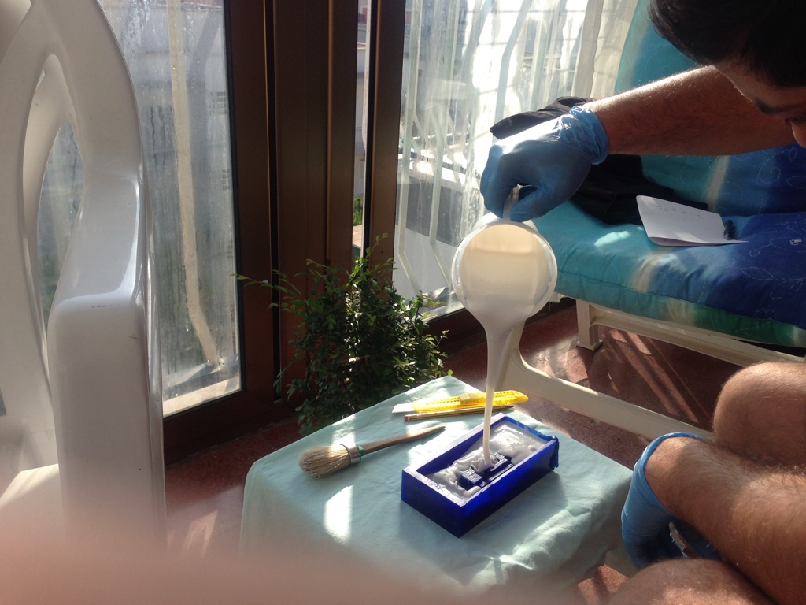
You must wait 24 hours for a complete drying of rubber, to be sure I waited 48h before removing the wax. The result was very satisfactory despite the mold with wax was not accurate. No air bubbles and excellent performance of the material: now I am ready to make the cast!
I decided to use gypsum for casting in the mold, both for economic reasons and for speed of drying. I was surprised by the quality of the scagliola (a type of gypsum less crude and more suitable for precision molds). This is the final result:
All the files are available for downloand here:
This week the assigmnet was to measure something: add a sensor to a microcontroller board that you've designed and read it. I made to board following the satshakit of my mate Daniele Ingrassia
For the exercise I decided to measure the soil moisture of my plants. It 's really simple to build a humidity sensor but to save time I have decided to use a sensor already made  This is the sketch used for the exercise
This is the sketch used for the exercise
The image easily explains how to connect the sensor to the Arduino, from here it is easy to connect also satshakit.
The next was to insert the sensor in the soil and try to measure the moisture. This is the final result: 
Moisture Sensor - Input Devices from Claudio Pecere on Vimeo.
The sketch for Moisture sensor is available for downloand here:
This week the exercise was to add an output device to a microcontroller board you've designed and program it to do something. For this exercise I used a 7-segment display with four digits to be connected to satshakit through a breadbord These are simple images that shows how is made this kind of display and how to connect to a microcontroller 

And these are the right links between microcontroller and display
This is the sketch used for the exercise of Output devices
The next step was to connect the display to satshakit and load the sketch, I choose an animation for the display for single segment
Display 7 segment 4 digit animation from Claudio Pecere on Vimeo.
The sketch for the animation is available for downloand here:
The goal of this week was to Design and make a 3D mold (~ft2), and produce a fiber composite part in it. During the week, I tried to draw more projects to do the exercise but at the end I decided to produce a long board taking inspiration from some models found on the web. My goal was to produce a longboard to give to a friend very passionate about these objects. I have therefore designed the board on Rhino with the aim of producing with the laser cut, three equal pieces of 4 mm to be assembled by means of composite materials. 

This was the phase of laser cutting:
Laser on Longboard from Claudio Pecere on Vimeo.

The next step was make the final longboard using fiber and bicomponent epoxy resin mixed 1:2. I glued all the layer using fiber and resin and taking care not to leave air bubbles or gaps between the levels of wood I mixed components following the indications mixing for about 2 minutes in a container off to avoid the formation of a liquid non-homogeneous


The next step was to locate and secure the board on the mold previously prepared by Gianluca Pugliese to give the right angle to the longboard
When I finished with the resin and fiber I waited 12 hours that the composite material dried out completely. After I started the stage of removing the excess parts first with scissors then with a dremel and then sanding the corners of the board.This was a particularly fatiguing process because the composite material excess was very hard to remove 

Once I finished I performed a test of strength of the board and fortunately everything went pretty well!
Load resistance Test from Claudio Pecere on Vimeo.
The last step was to assembly truck and wheels to my longboard, I used components reused but still functional and useful to create a true longboard:

Finally the board is ready for use!!!
Trying longboard from Claudio Pecere on Vimeo.
The longboard file is available for downloand here:
For this week we have to design and build a wired and/or wireless network connecting at least two processors. To realize the exercise I used a communication device very cheap but very powerful. it's a very inexpensive radio module, that provide a robust interface for Transferring data wirelessly between devices with minimal resource and power consumption. In addition to this, it is a module of communication often used, easy to find good libraries and many examples of use It is difficult to choose which library to use as there are lots of on the web. This is the most used. The first step was to connect pins: each device has 8 but only 7 are those to be used, at least for most of the cases. This is the disposition of the Pin:
Given that I'm a beginner I started from the examples proposed in getting started. Very simple, it was enough to connect the pin to the module as the following list and load the Getting Started sketch of the two microcontrollers:
These are the right links between microcontroller and RF24 (RF24 Pin8 not linked)
Once loaded the sketch on both microcontrollers, with two parallel sessions of Arduino IDE, if all is ok you should see this result in both monitors serial
Last step is to choose which is receiving and which transmitter with T or R. The result is this:
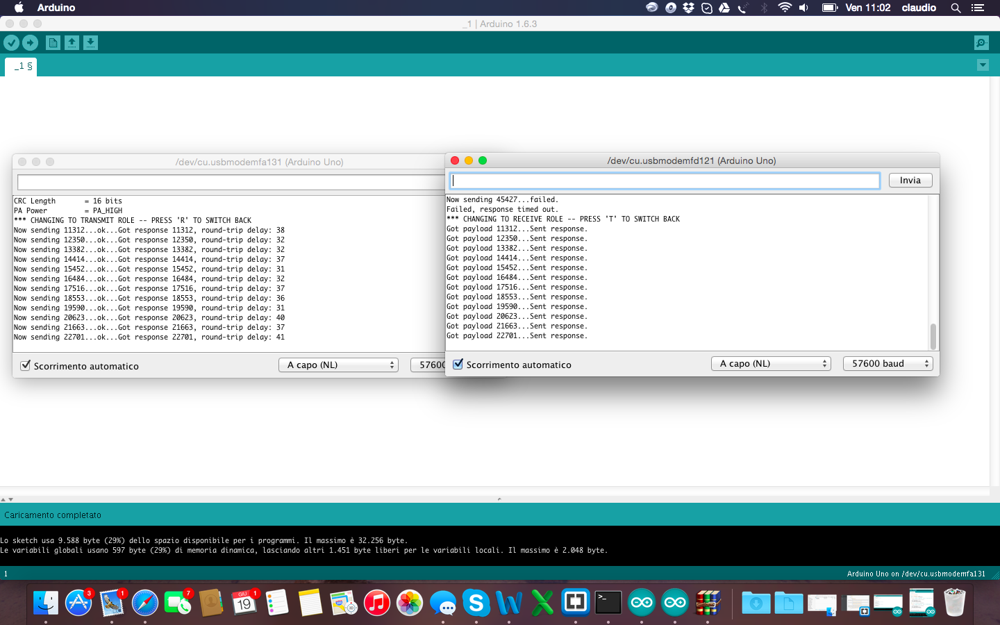Getting Started Networking from Claudio Pecere on Vimeo.
.The next step was to try and send a text message from one module to another and modify it in real time. The connections have remained unchanged instead I loaded two different codes on the two microcontrollers.
This Video show the final result:
Sending Text with RF24 Module from Claudio Pecere on Vimeo.
The sketch files are availables for downloand here:
This week the assignment was to write an application that interfaces with an input and/or output device. The initial idea was to use one of the sensors used in the previous weeks to write an application that would show the measured data and printing on an interface to be used also in the final project. That's why I chose to use a humidity sensor and air temperature humidity sensor and air temperature The first step was to connect the sensor to satshakit following the directions of Arduino UNO.
After that I tried the operation of the sensor only temperature, through a simple sketch loaded on ARDUINO IDE just after install the right libraries of DHT11.
Luckily the sensor works, and this is the measurement printed on the monitor serial
The next step was to write the application for an interface from which to display the measurement of the sensor. This part will be used for the final project. To create the interface I used QT, software that I found it very intuitive and easy to use for a beginner like me. The application has been written in C++
I found some problems in the recognition of the serial ports of the microcontroller which effectively impeded the application from running. This is a type of problem but manifests itself depending on the operating system from which threw the interface. With windows the result was easy to obtain

Finally, this video shows the final result:
Testing Temperature Application Interface from Claudio Pecere on Vimeo.
.The temperature sketch and the project with the code in C++ of the application interface are availables for download here
The goal of this final project is to provide a modular and smart pots system, easy to produce, cheap and with a pleasant and useful interface. This final project is carried out in collaboration between Youssef Bouali and Claudio Pecere
The idea is to create a series of modular and intelligent pots. We want to combine the look of the design of multiple objects (maybe 5) modular and interchangeable, and the sensors and electronics in order to monitor the health status of various plants.
The idea was born from the need to monitor and possibly interact with plants from a distance. There are many projects related to the monitoring of the health of plants, some born in the Fab Lab or at least inspired by the DIY philosophy, others that are already commercial products for small indoor culture. Also during the week we have heard of other similar projects within the Fab Academy on which there was a brief exchange of views on deepening maybe at the end of the course. These are the current project in this field:
The pla is present in the lab purchased from national suppliers. The sensors were purchased from the web, mainly from amazon and ebay. The sensors were purchased from Farnel while the board is that developed by Daniele Ingrassia: satshakit, fabricated with the laser machine in the lab and assembled with its components
Total cost for materials and for each pot it's about 27,81€
Will be produced the physical part of the pot, the board will be produced which will then be completely assembled with all the parts. The sensors can expect instead purchased.Will be developed both the software, able to process sensor data and display them on the display, and both the 3D model of the pot
These are the main tasks:
The module of this week concerned the creation of a machine through a group work within the lab. We decided to divide into two groups to build two machines. The first a lathe and the second a plotter. Given the distance from our lab, my job along with that of Youssef, was to write the interface to the plotters that allow to load an SVG file and preview it. The main page of the lab with complete documentation exercise is available here
In past modules, our local instructor Massimo Menichinelli, taught us Python programming language, therefore it has been decided to use this language to develop the software. The idea behind is to print SVG files.
The work was structured as follows:
For a beginner like me start with an example of application python was easier although the work in the end proved to be more difficult than expected. After install libraries of wxGestal and wxPython like showed in this tutorial, I started to charging interface by adding the button to upload the file svg, who also originates coordinates to be sent to the machine After this step I worked on loading the preview of files before parsing to the machine These are the files that I have changed the code: the first is the interface for loading SVG file and parsing the coordinates, the second one is the interface that show a previwe of the SVg file
Unfortunately not everything went according to plan. The main problem encountered by me and Youssef was to integrate the two main applications. I tried for a long time without being able to run the GUI like the way I wanted . Maybe is necessary to study better python. I hope in the coming days to investigate and fix the problem
The code for the python application is available for downloand here: